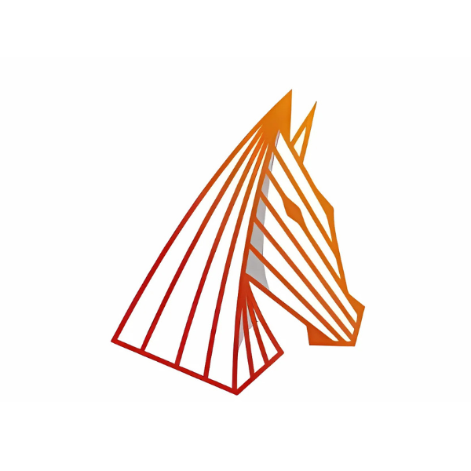

Test écritMai 2026
Test de Aether and Iron : Un RPG à la Disco Elysium où l'on combat en voiture
Un RPG indépendant qui mélange profondeur narrative et combats tactiques en véhicules dans un New York flottant des années 30.
Tests, guides et univers des jeux indépendants — décryptés avec passion et en français.

Servant of the Lake FR (Rusty Lake) - Jour 1 (Walkthrough commenté)
Solution complète du Jour 1 : énigmes des bougies, service du thé, réunion de famille et fouille du grenier.

The Blood of Dawnwalker : Guide du Système de Combat & Astuces pour bien débuter
Parades directionnelles, esquive, alternance jour/nuit et compétences vampiriques.

Resonance: A Plague Tale Legacy | Nouveau Combat & Traque Horrifique : Le Guide Complet
Le nouveau gameplay axé sur l'action, les parades de Sofia, le grappin et l'ambiance horrifique.

Silver Pines : Le nouveau survival horror indépendant entre Twin Peaks et Silent Hill
Un survival horror metroidvania angoissant et mystérieux développé par Wych Elm et édité par Team17.

Manor Lords : Guide sur la Nouvelle Mise à Jour (Avoine, Vaches, Logistique...) et Conseils
Cultures d'avoine, bétail en hiver, nouvelles constructions et logistique améliorée.

The Witcher 3 Remastered : la mise à jour gratuite ET une nouvelle extension !
The Witcher 3: Wild Hunt revient avec une importante mise à jour gratuite le 29 septembre 2026 sur PC et consoles.

Going Medieval 1.0 — Guide Débutant FR
Tout ce qu'il faut savoir pour bien démarrer ta colonie médiévale dans la version 1.0 complète.

Life Below : guide et avis
Avis et guide sur Life Below, le city-builder sous-marin indé de Megapop — ambiance chill et gestion.

Subnautica 2 guide
Guide de démarrage : ressources essentielles, crafts et conseils pour survivre sous les mers.

ASKA FR | Bien Démarrer sa Tribu Viking (Guide débutant)
Comment bien démarrer ta tribu viking, gérer tes ressources et progresser rapidement.

Test Aether and Iron — gameplay vidéo
Un RPG narratif à la Disco Elysium où l'on combat en voiture dans un univers unique.

Test The Séance of Blake Manor — gameplay vidéo
Aventure narrative à la première personne et enquête dans un manoir victorien.

FOUNDATION FR | L'essentiel pour une Cité Optimisée (guide V1.11 / 2026)
Posez les fondations solides de votre économie pour bâtir un empire médiéval pérenne.

Manor Lords – Bien débuter sa ville médiévale | Guide Gameplay Fr
Guide débutant pour gérer au mieux sa colonie.

Test de Aether and Iron : Un RPG à la Disco Elysium où l'on combat en voiture
Un RPG indépendant qui mélange profondeur narrative et combats tactiques en véhicules dans un New York flottant des années 30.

The Séance of Blake Manor — Indie game REVIEW FR
Un jeu d'aventure narratif à la première personne mêlant enquête et surnaturel dans un manoir victorien irlandais.

Life Below : Un city-builder indé écologique sous les mers
Un city builder sous-marin unique développé par le studio norvégien Megapop — ambiance chill, message écologique et vraie profondeur.

Guide Manor Lords : réussir son départ (mise à jour maintenance & perks)
Guide complet pour bien démarrer dans Manor Lords : priorités, économie locale, développement des zones de vie et conseils d'extension.

Joueuse depuis l'époque des LucasArts, Sierra, Benoît Sokal et des premiers City Builders — j'ai vu l'évolution du gaming. Je partage ma passion à travers des vidéos YouTube et des tests écrits sur Medium, en français.
Ma spécialité : les jeux indépendants, les RPG narratifs et les jeux d'aventure. Tests honnêtes, analyses approfondies, zéro clickbait.
Ce site est édité par Aria Gaming FR, créatrice de contenu indépendante basée en France.
Ce site est hébergé par GitHub Pages, service fourni par GitHub, Inc., 88 Colin P. Kelly Jr Street, San Francisco, CA 94107, États-Unis.
L'ensemble du contenu de ce site (textes, vidéos, images) est protégé par le droit d'auteur. Toute reproduction ou distribution non autorisée est strictement interdite.
Le site Ariagamingfr participe au programme d'affiliation d'Instant Gaming et propose des recommandations via la plateforme de curation Steam.
Lorsque vous cliquez sur un lien affilié Instant Gaming et que vous effectuez un achat, une petite commission est reversée à Ariagamingfr pour financer l'hébergement et la création de contenu. Cela n'entraîne aucun surcoût pour l'acheteur et n'influence pas notre indépendance éditoriale lors des tests et avis publiés sur le site.